1. QGIS の使用¶

他の種類の関数は pl/pgsql にあります。アプリケーションの要件が複雑になるにつれて、あらかじめ定義した関数を使うことが必要になります。
1.1. QGIS のセットアップ¶
グラフには set of edges と set of vertices が関連付けられています。osm2pgrouting は、ways テーブルに関連付けられた ways_vertices_pgr テーブルを提供します。vehicle_net や small_net のように edges の部分集合を使う場合は、たとえば緯度経度の位置に最も近い頂点を特定するために、それぞれに対応する頂点の集合を使う必要があります。
から QGIS を起動し、メニューバーから を選択します。
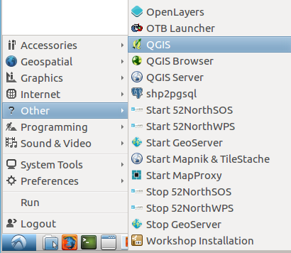
注釈
QGIS の場所は環境によって異なる場合があります。
このワークショップの手順は QGIS 2.14 Essen を前提としています
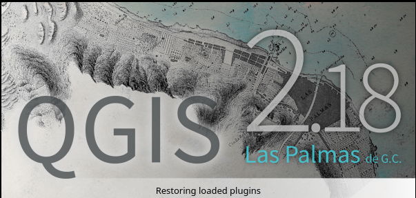
ブラウザパネルを閉じます
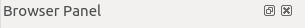
をクリックして、PostGIS が有効な PostgreSQL データベースに接続します
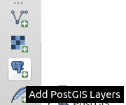
をクリックして、新しい接続を作成します
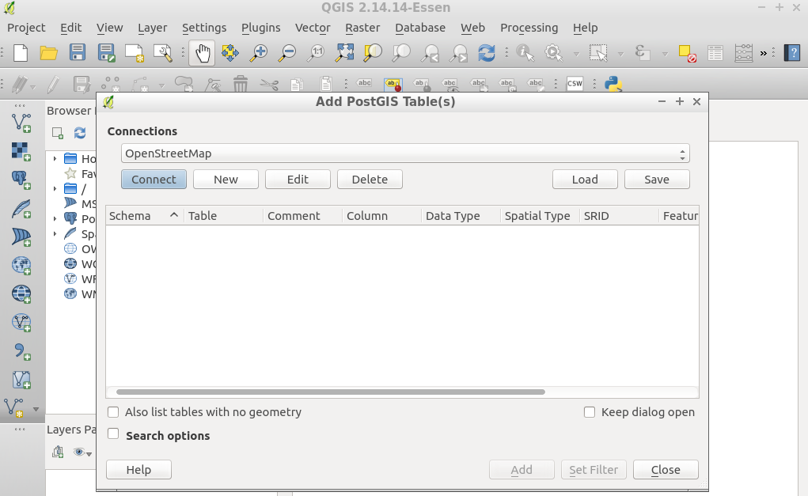
情報を入力し、接続をテストします
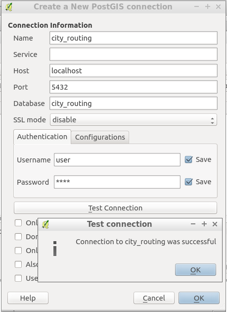
- 名前:
city_routing- ホスト:
localhost- ポート:
5432- データベース:
city_routing- ユーザ名:
user- パスワード:
user
QGIS にログイン名とパスワードを記憶させます
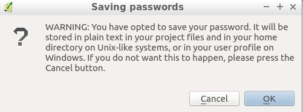
{kind=link}
{kind=link}
{kind=link}
{kind=link}
{kind=link}
{kind=link}
{kind=link}
1.2. PostGIS レイヤの追加¶
をクリックすると、データベース内のテーブルとビューの一覧が表示されます。
一意の値を持つ列を選択する必要があります:
ルート検索ビューでは
seqデータビューでは
gid
{kind=link}
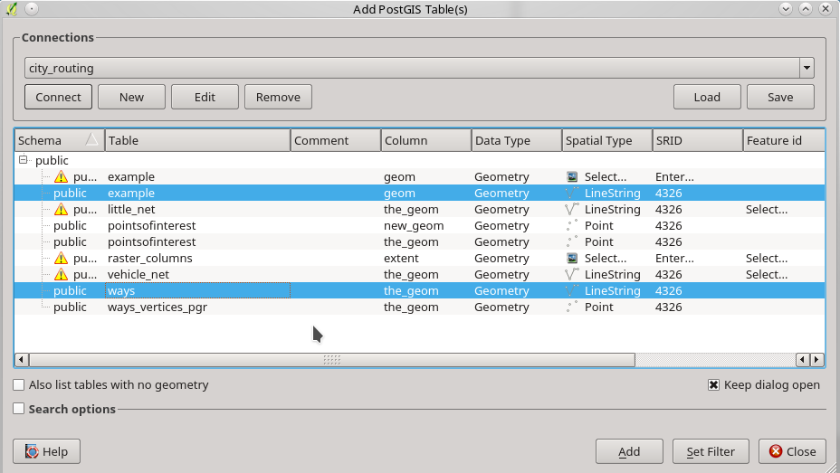
1.3. ルート検索レイヤの書式設定¶
ルート検索ビューを選び、 を実行します
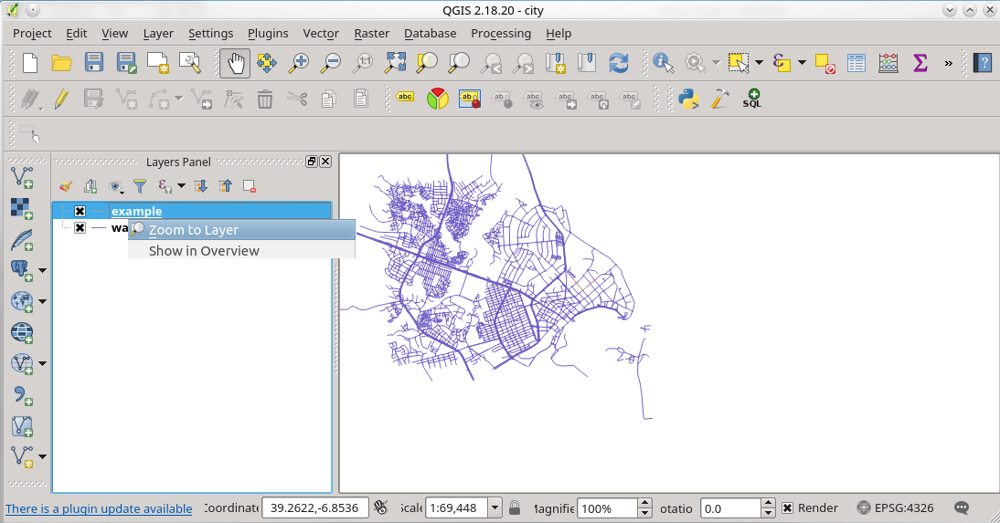
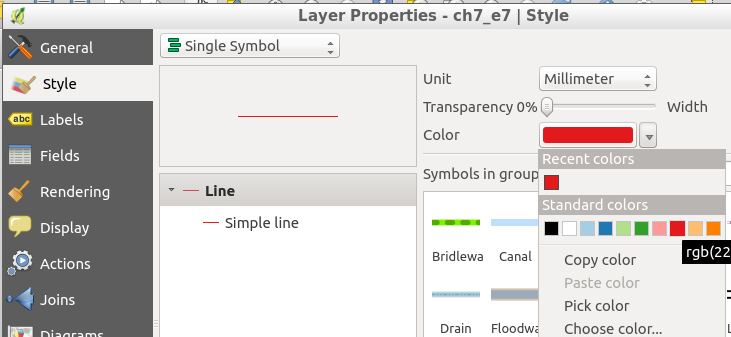
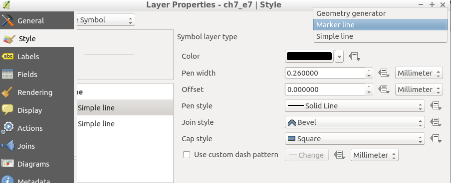
{kind=link}
{kind=link}
{kind=link}
{kind=link}
1.4. 書式のコピーと貼り付け¶
書式を設定したレイヤを選び、 を実行します
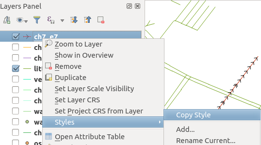
別のレイヤを選び、 を実行します
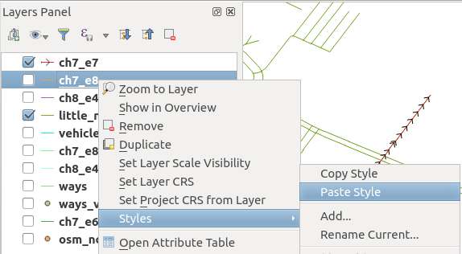
{kind=link}
{kind=link}
1.5. プロジェクトの保存¶
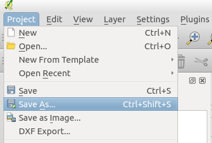
に移動し、
pgrouting-Bucharest-Exampleという名前で保存します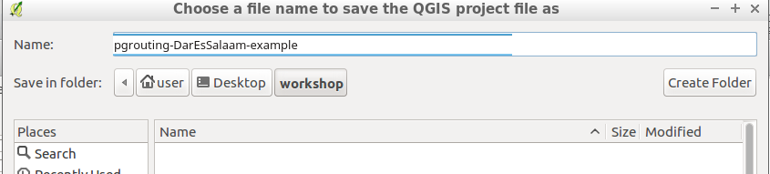
{kind=link}
{kind=link}